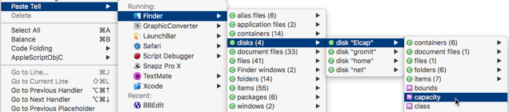

|
Tell Blocks and Terms Blocks |
|
There are many ways to create a tell block targeting a particular application. This is valuable because scripting an application with a tell block is so common when using AppleScript.
Moreover, you can create a tell block containing a reference to an object within the targeted application, or containing a command or function template.
Some ways of creating a
tellblock are also ways of creating ausing terms fromblock.
-
Use code completion, in a script:
- Type
tell app "ortell application "and press Esc. This produces a list of running, recent, and favorite applications to choose from.
- Type
-
Use text substitution, in a script:
- Type
ta(meaning “tell application”) followed by a space. Atellblock is created, and the application name is a selected placeholder, ready for you to type the name of an application — or press Esc to choose from a pop-up list of running, recent, and favorite applications.
- Type
-
In a script window’s menus:
-
Choose Edit > Paste Tell.
-
Or, Control-click and choose Paste Tell from the contextual menu.
The hierarchical Paste Tell menu contains the same shortened version of the dictionaries list (without the All category) that appears in the File > Open Dictionary menu. In the menu:
-
Choose an application to insert a
tellblock targeting that application. -
Moreover, for running applications, each application in the Paste Tell menu has its own hierarchical menu that lets you navigate its object hierarchy, much as if this menu were the outliner of an explorer. Choose an object to insert a
tellblock targeting that application and referring to that object.
Hold Option to insert the
tellblock into a new script. -
-
In a script window’s dictionaries inspector:
-
Select an application and click Paste Tell or Paste Using. Alternatively, choose Paste Tell XXX or Paste Using Terms From XXX from the contextual menu.
-
Click open the triangle next to an application’s name to see a list of that application’s commands and functions. Select a command or function and click Paste Tell. You’ll get a
tellblock with a command template.
Hold Option to paste into a new script.
-
-
In a script window’s tell context inspector:
- Select an object reference and click Paste Tell.
You’ll get a
tellblock referring to that object. -
In a dictionary window:
-
Choose Dictionary > Paste Tell.
-
Or, click Paste Tell in the dictionary window’s toolbar.
-
Or, Control-click in the dictionaries list and choose Paste Tell XXX (or Paste Using Terms From XXX).
-
Control-click in the terminology list and choose Paste Tell XXX.
If the focus is on a command or event, you’ll get a
tellblock with a command template. Hold Option to paste into a new script. -
-
In a dictionary window’s explorer:
-
Select an object reference and click Paste Tell in the toolbar.
-
Or, choose Dictionary > Paste Tell XXX.
You’ll get a
tellblock referring to that object. Hold Option to paste into a new script. -
-
In an outliner (including the result pane, the dictionary window’s explorer, and so on):
-
Control-click on a line of the outliner and choose Paste Tell from the contextual menu.
-
Or, drag a line of the outliner into your script.
You’ll get a
tellblock referring to that object. Hold Option (while choosing from the contextual menu) to paste into a new script. -
-
In the Finder:
- Drag-and-drop an application into your script window. A dialog appears asking what you want to do. One option is to paste a
tellblock targeting that application.
(Alternatively, drag-and-drop an application’s name from the dictionaries inspector into your script window. Or, drag-and-drop from the dictionaries list in a dictionary window into your script window.)
- Drag-and-drop an application into your script window. A dialog appears asking what you want to do. One option is to paste a